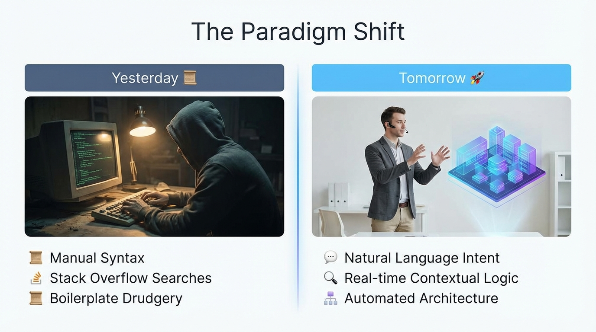
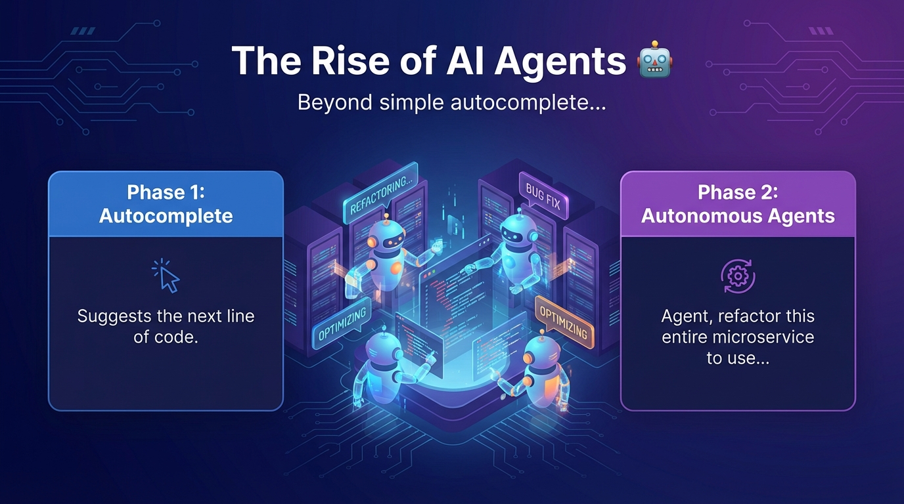

AI & The Future of Software Engineering
Orchestrating Intelligence in the Age of Autonomy

Software Development Life Cycle 2.0
🧠
Ideation
LLM Brainstorming
💻
Coding
Copilot Pairing
🧪
Testing
Auto-Unit Tests

Beyond simple autocomplete...
// Phase 1: Autocomplete
// Suggests the next line of code.
// Phase 2: Autonomous Agents
// "Agent, refactor this entire microservice
// to use GraphQL and update the documentation."
Agents can now:
Hallucinations
Confident but incorrect logic.
Security Gaps
AI may suggest deprecated or vulnerable libraries.
Technical Debt
Rapid code generation can lead to "Spaghetti AI".
Legal/IP
Licensing concerns of training data.
What AI cannot replace (yet):
Are you ready to lead the transition?
Thank You!
Questions? | @YourHandle